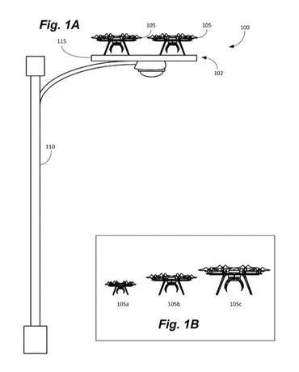
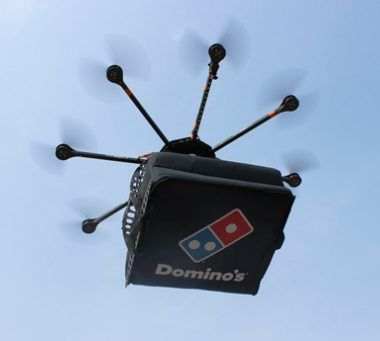
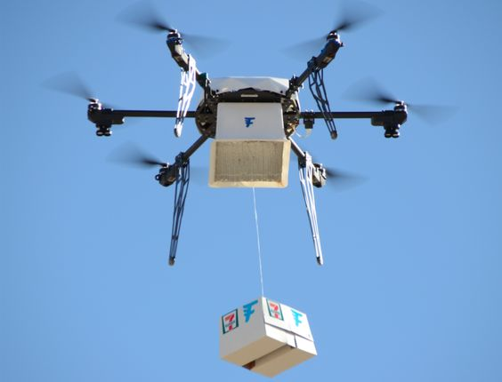

Naturally drones are controlled by humans, scientists however are trying to find ways in which to operate them without human control. Basically they're trying to automatically let them move around to aid people without actually being controlled by people themselves. This allows drones to carry out risky tasks so that us humans don't risk our lives.
Examples of this are:
Checking power lines

Carrying out pizza deliveries

Transporting medical supplies

While it would be useful to have the drone carry out all of the above, it does have its disadvantages. One of them being that it is costly to create a numerous amount of these. Another con is that there is no guarantee that the delivery will reach the correct place; someone could even steal the drone. Lastly it could be a defective drone, so when it could be transporting supplies, it blows up possibly causing injury to someone.
Drones in this area however do have a few advantages. One of them being that they can do jobs with no supervision necessary. They also don't require insurance like working humans do. These aerial vehicles also deliver packages that you are too busy to give physically.